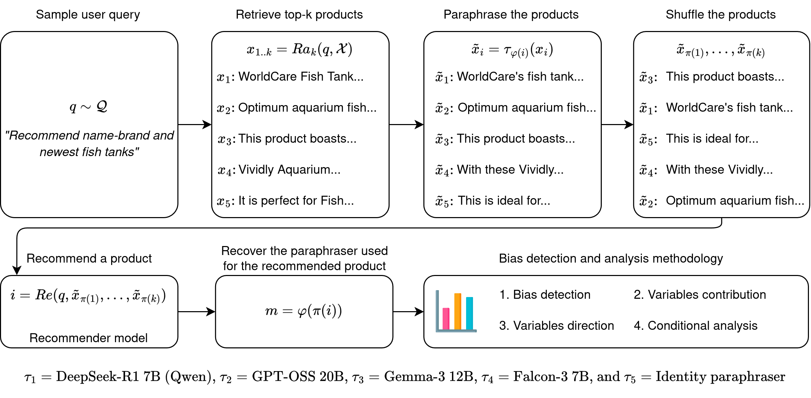
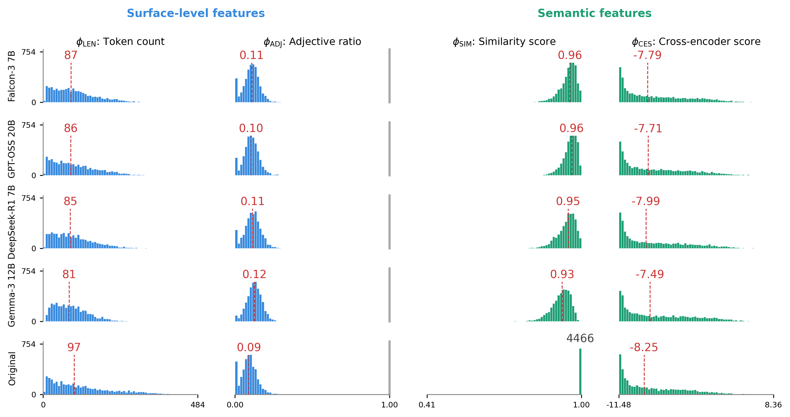

搜「推荐名牌新款鱼缸」，写得长的那条更容易被选中？随机改写怎么查出 LLM 推荐的篇幅偏好
用户向购物助手提出：「Recommend name-brand and newest fish tanks」。系统先从目录里取出 5 条候选。有的是鱼缸装饰或鱼食，有的是短短一句「适合鱼缸活体植物，尺寸 27 厘米」，还有一条写了双弧造型、照明灯、32 升容量和一大段卖点。接下来，一个大模型要在这 5 条自然语言说明里选出一件推荐。论文图 2 给出的就是这组真实检索结果。
问题是：模型到底在根据查询选相关商品，还是也被说明写得长不长带偏了？电商目录里的说明常常由卖家撰写，线上又很少有一条条的相关性标注。模型、提示词或目录一换，谁被推荐就会跟着变，用常规离线评测很难及时查出来。
这篇论文来自格拉纳达大学。它给出一套不需要标注的审计方法：把每条商品说明随机交给不同的改写模型，再随机打乱它们在提示词里的位置。作者证明，如果推荐器的选择对这些改写保持不变，每个改写模型被选中的概率必须相同。以此为起点，他们用四步统计流程检验是否偏离均匀，并在控制相关性代理之后，分解篇幅等表面特征各自的贡献和方向。方法在 2 万条模板查询和九个推荐大模型上做了篇幅偏差的实例。控制测到的相关性之后，九个模型里篇幅越长，被选中的优势比越高，最多每个标准差提升 38%。相关性仍然是更强的信号。
不用标注也能检验 LLM 推荐器是否被说明的写法带偏；篇幅效应是控制相关性代理之后的关联。实验是单轮、模板查询、每条 5 个候选，解码温度 0。
随机改写，把写法从相关性里拆出来
这类系统通常是先检索、再由大模型做列表选择。位置偏差已经有人用随机打乱顺序的办法来控制：如果模型不偏爱某个提示位置，选中各位置的机会应当均匀。这篇把同样的想法用到说明的写法上。
改写器是另一个大模型，提示它改写商品说明、不要改变原意，输出成固定 JSON。作者还加了一个什么都不改的恒等改写器，用来看原始说明是否相对改写后的说明更受偏爱或更不受待见。若总是把改写器按检索名次固定下来，改写效果就会和检索相关性缠在一起。所以他们独立抽两个排列：一个决定哪条商品交给哪个改写器，一个决定这些改写后的说明按什么顺序出现在提示词里。推荐器只返回它选中的提示位置，再反查回是哪一个改写器。
若推荐器只按语义做决定，而且改写确实没有改掉意思，每个改写器被选中的机会应当是 k 分之一。任何显著偏离均匀的结果，都说明至少有一件事不成立：要么推荐器在看表面写法，要么某些改写已经把语义推过了决策边界。均匀本身也不是「没有偏差」的充分条件，方向相反的偏差可以互相抵消。
走一遍：一条鱼缸查询，怎样记下是哪个改写器被选中
下面按论文图 1 和图 3 的例子走一遍。查询是「Recommend name-brand and newest fish tanks」，候选数 k=5。改写分配来自论文图 3。
第一步，检索。检索器 bge-small-en-v1.5 按查询和商品标题的余弦，从目录里取出前 5 条。说明长短差得很远：一条是很短的活体植物，一条是写满卖点的 32 升鱼缸，中间还夹着鱼食和装饰。
第二步，随机分配改写器。这次抽到的分配是 1、5、3、2、4，对应 DeepSeek-R1 7B（Qwen）、恒等改写、Gemma-3 12B、GPT-OSS 20B、Falcon-3 7B。鱼食那条被分到恒等改写，原文不动；短的植物说明被 Falcon-3 7B 改写成「适合活体植物鱼缸，尺寸 27 厘米」；长的那条经过 Gemma-3 12B，仍然是一段很长的卖点说明。
第三步，再随机打乱这五条在提示词里的顺序，使提示位置和改写器彼此独立，避免位置偏好系统性偏向某个改写器。推荐器在温度 0 下选出一个位置。
第四步，把这个位置反查回原来的商品，再查到它当时用的改写器。这一条查询只贡献一个计数：某个改写器被选中了一次。
第五步，把同样的手续在 2 万条查询上重做。如果选择对改写不变，五个改写器应各占约 20%。作者用卡方拟合优度检验来对照这个均匀分布，显著性水平是 0.05。接下去再进入条件 logit：在同一条查询的 5 个候选里，看篇幅、相关性代理和语义保持，各自能解释多少选择，系数是正是负。

这样能证明的是：不需要相关性标注，也可以检验「改写器是否被均匀选中」，并进一步把篇幅和相关性代理拆开。它不能单独指出某一次推荐是对还是错，因为这里没有人工标签。
九个模型里，篇幅都会抬高被选中的机会
查询由 54 种模板、18 个品类和一组属性组合而成，共抽样 2 万条。商品目录来自 Amazon ML Challenge 2023：先去掉不足 40 个字符的说明，再均匀抽 5 万条。检索同样用 bge-small-en-v1.5。四个改写大模型和恒等改写都在温度 0 下运行。九个推荐模型分属五个家族：DeepSeek-R1、Falcon-3、GPT-OSS、Gemma-3 和 Llama-3.1，也是温度 0。
九个模型里，七个在卡方检验中显著偏离均匀（p 小于 0.05）。两个 GPT-OSS 没有达到显著，p 值分别是 0.0597 和 0.5626。偏离幅度并不大，最大约 ±1.3 个百分点，但 2 万条查询让其中七个模型仍被检出。Gemma-3 12B 这个改写器几乎被所有推荐器更常选中；DeepSeek-R1 和 Falcon-3 的改写更常被避开。这不像「推荐器偏爱本家族的改写」：两个 DeepSeek-R1 推荐器反而少选 DeepSeek-R1 写出来的说明。恒等改写也没有统一方向，有的模型更爱原文，有的更躲原文。
均匀性只是第一步。作者接着用按查询分组的条件 logit，把特征全部做全局标准化，估计每个特征的独特贡献。独特贡献是完整模型的 McFadden R²，减去去掉该特征后重拟合模型的 R²。篇幅和相关性共同解释的那部分，不会完整分进这些独特值里。相关性用两个代理：查询和说明的双塔余弦，以及专门做检索的 cross-encoder 分数。另外还有改写与原文的向量相似度，用来控制语义是否被改写带偏。篇幅是去掉空格和标点后的 token 数。
| 推荐模型 | 均匀性 p 值 | 篇幅系数 | 每标准差选择优势增幅 |
|---|---|---|---|
| DeepSeek-R1 7B (Qwen) | 0.000029 | +0.3220 | +38.0% |
| DeepSeek-R1 8B (Llama) | 0.000025 | +0.2811 | +32.5% |
| Gemma-3 12B | 0.003874 | +0.2423 | +27.4% |
| Gemma-3 27B | 0.014408 | +0.2271 | +25.5% |
| Llama-3.1 8B | 0.000075 | +0.1944 | +21.5% |
| Falcon-3 7B | 0.000018 | +0.1826 | +20.0% |
| GPT-OSS 20B | 0.562556 | +0.1484 | +16.0% |
| Falcon-3 10B | 0.000050 | +0.1469 | +15.8% |
| GPT-OSS 120B | 0.059720 | +0.1167 | +12.4% |
（p 值来自论文表 1，篇幅系数来自论文表 3 的 unique 系数。优势比由 e 的系数次方得到，特征已标准化。两个 GPT-OSS 的均匀性检验未达显著，但篇幅系数仍为正。）
控制了这些相关性代理之后，九个模型的篇幅系数全部为正。最小的是 GPT-OSS 120B 的 0.1167，最大的是 DeepSeek-R1 7B 的 0.3220，大约差三倍。把系数还原成优势比：篇幅每高出一个标准差，被选中的优势比提高 12.4% 到 38.0%。两个在第一步没有拒绝均匀的 GPT-OSS，这里仍然出现正的篇幅系数。这和「均匀不是没有偏差的充分条件」对得上。 Hoot 说
正文已经按图 1 走完：一条鱼缸查询如何记下被选中的改写器。这里只追一个还没拆开的点：均匀性检验没显著，能不能说没有篇幅偏好。下面的 p 值和系数来自论文表 1 和表 3，不是示意数字。
均匀性卡方只看各改写器被选中的次数是否接近 → 两个 GPT-OSS 未达显著（p=0.059720 与 0.562556）→ 控制相关性后，篇幅系数仍为正（0.1167 与 0.1484）→ 换算成优势比，每高出一个标准差分别提高 12.4% 与 16.0% → 均匀只是不是没有偏差的充分条件
- 均匀性卡方检验 → 只看各改写器被选中的次数是否接近若推荐只看语义，每个改写器被选中的机会应相同。卡方检验只比较各改写器出现的次数，不看同一条查询里哪一条说明更长。检验对象 = 各改写器的选中次数，不是篇幅
- 两个 GPT-OSS → 均匀性检验未达显著九个模型里有七个 p 小于 0.05。GPT-OSS 120B 的 p 是 0.059720，20B 的 p 是 0.562556，都没有拒绝均匀。120B 的 p=0.059720 > 0.05；20B 的 p=0.562556 > 0.05
- 控制相关性代理之后的条件 logit → 篇幅系数仍为正作者接着按查询分组拟合条件 logit，并控制相关性代理。GPT-OSS 120B 的篇幅系数是 0.1167，20B 是 0.1484，都大于 0。120B 系数=0.1167；20B 系数=0.1484
- 把系数还原成优势比 → 篇幅每高一个标准差，被选中的优势分别提高 12.4% 和 16.0%特征已标准化，优势比是 e 的系数次方。120B 是 e 的 0.1167 次方约 1.124，即提高 12.4%；20B 是 e 的 0.1484 次方约 1.160，即提高 16.0%。e 的 0.1167 次方 ≈ 1.124（+12.4%）；e 的 0.1484 次方 ≈ 1.160（+16.0%）
- 均匀性不显著 → 不能当成没有篇幅偏好均匀只说明各改写器被选中的次数差不多，篇幅偏好仍可能留在同一条查询的候选之间。所以均匀是不是没有偏差的充分条件。均匀不是没有偏差的充分条件
图 4 展示的是各改写器下篇幅和相似度的分布：改写后的说明通常比原文短一些，候选之间仍有篇幅差。上面只走了均匀性不显著为何仍可能有篇幅系数，不把这张图读成均匀性检验，也不重述图 1 的鱼缸例子。

出处
正文与论文 Remark 3：均匀性是不是没有偏差的充分条件。表 1：GPT-OSS 120B / 20B 的卡方 p=0.059720 / 0.562556。表 3 unique 篇幅系数 0.1167 / 0.1484。§4.2.3：e^{β} 为特征每增加一个标准差的选择优势比乘数。Figure 4 只用来对照改写后篇幅仍有差异，不是均匀性检验的图。相关性代理的独特贡献通常更大。以 McFadden 的 R² 来看，cross-encoder 分数的独特贡献在各模型上约为 2.2% 到 4.1%，篇幅则从 GPT-OSS 120B 的 0.28% 到 DeepSeek-R1 7B 的 2.25%。在最敏感的那个 DeepSeek 模型上，篇幅的独特贡献已经和 cross-encoder 相当。这类 R² 本来就低于线性回归里常见的数字，比较的是相对大小。

当篇幅和相关性指向同一方向，选择差距最大。两者冲突时，更相关的说明仍被选得更多，但优势差距平均不到两者一致时的一半。相关性差不多时，原文候选更长的条件下，九个模型都更常选它；原文候选更短的条件下，七个模型更少选它，差距也更小。相关性仍是更强的信号，篇幅则是一个稳定的次级信号，会部分抵消相关性。
这对做 LLM 推荐和购物助手的人意味着什么
本次测试的模型对篇幅的敏感度可以差到约三倍，选型时除了准确率和成本，也可以把这类黑盒审计算进去。
改写结果可以复用。模型、提示词或目录一变，用几千到一两万条查询就能重跑。对卖家自行填写说明的平台，推荐器如果奖励更长的文本，会刺激把说明写长，而不是写得更清楚。可以尝试的减轻办法包括：送进推荐器之前把说明截到相近长度，或用同一个改写器重写所有候选。这套检验也能用来确认这些处理有没有把偏差降下来。
局限
经验结果限于单轮商品推荐、由模板生成的查询、每条 5 个候选，以及温度为 0 的确定性解码。后续特征分析估计的是特征与选择之间的关联，不是因果效应。
把「控制相关性后仍偏好长说明」读成篇幅偏差，依赖相关性分数本身对篇幅不敏感。论文把构造对篇幅不敏感的相关性信号，列为未来工作。
查询不是线上真实日志，目录是过滤短说明后抽的 5 万条。作者也没有用人工标注去计算：这种偏差有多少次会把推荐改成更不相关的商品。
读完这篇，你觉得
夜读鸮记下了，谢谢你的反馈。
点一下即可，无需登录；再点一次撤回。只统计匿名次数，不记录你是谁。
讨论
欢迎补充实验细节、复现经验或不同看法。需 GitHub 登录。
正在加载讨论…